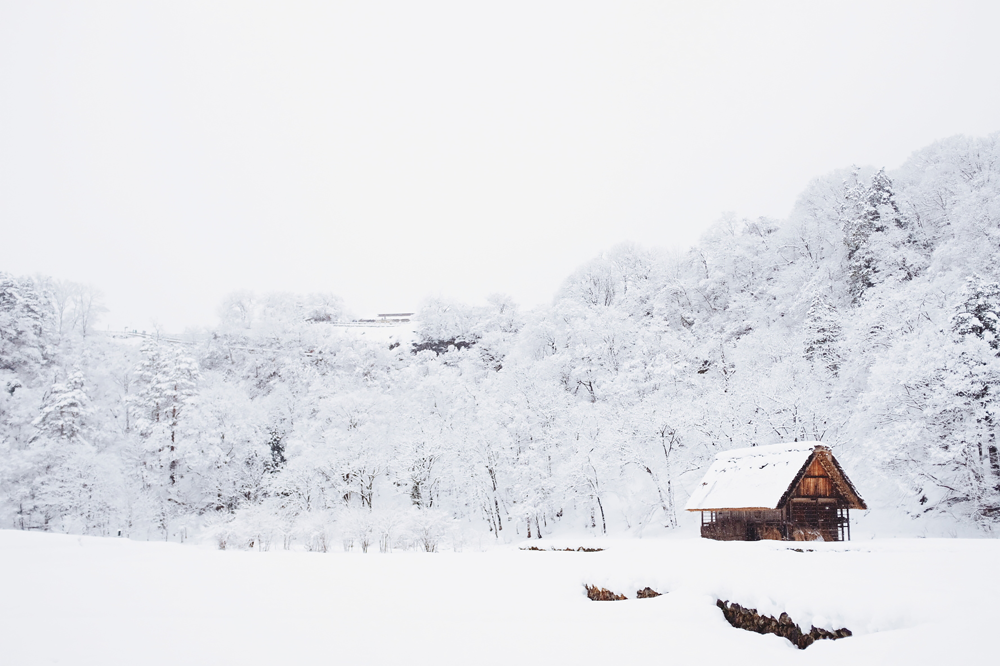

- Herr Spaghettibein
- Übernachtungsparty
- Ein kalter Wintertag
- Schorsch hat sich erkältet
- Die Ballonfahrt
Peppa Wutz - Ein kalter Wintertag(Cold Winter Day)

YouTube에서 동영상 보기
Ich bin Peppa Wutz.
Das ist mein kleiner Bruder Schorsch.
Das ist Mama Wutz, und das ist Papa Wutz.
Peppa Wutz.
Ein kalter Wintertag
Heute ist es sehr kalt. Peppa und Schorsch tragen ihre
Mützen, Schals, Mäntel, Handschuhe und Stiefel.
@ Guck mal Schorsch. Die Bäume haben keine Blätter.
Die Bäume haben im Herbst ihre Blätter verloren.
Peppa und Schorsch haben eine Matschepfütze entdeckt.
Peppa und Schorsch lieben es in Matschepfützen herumzuspringen.
@ Ich zuerst!
@ Äääihh, Ääih.
Es ist so kalt, dass die Matschepfütze zu Eis gefroren ist und das ist sehr rutschig.
@ Das ist nicht witzig.
Da kommen Mama und Papa Wutz.
@ Ah, gut eine Matschepfütze.
Papa Wutz springt auch gerne in Matschepfützen.
@ Halt, Papa!
@ Hohohohooo. Hohoho, das war knapp. Ein Glück, dass ich so gut die Balance halten kann.
@ Papa, die Pfützen sind heute alle vereist. Wir können nicht reinspringen.
@ Das macht nichts. Kommt, wir füttern die Enten mit Brot.
@ Hurra!
Peppa und Schorsch lieben es, die Enten zu füttern.
@ Hallo Enten! Wir haben euch Brot mitgebracht.
Die Enten mögen Brot.
Es ist so kalt, dass der Teich zugefroren ist.
Das Eis ist sehr glatt.
@ Wir wollten euch nicht auslachen, aber das sah ziemlich komisch aus.
@ Quark, quark
Es beginnt zu schneien.
@ Schnee!!
Peppa und Schorsch lieben Schnee.
@ Schorsch, wir fangen Schneeflocken.
Peppa und Schorsch fangen Schneeflocken.
Schorsch hat eine Schneeflocke gefangen.
Peppa hat eine Schneeflocke gefangen.
Da kommt Luzi Locke auf ihrem Schlitten.
@ Hallo Peppa.
@ Boaah Luzi, das macht bestimmt Spaß.
@ Wir rodeln alle zusammen. Auf dem Hügel. Da liegt eine Menge Schnee.
@ Sollen wir auch auf den großen Hügel gehen und beim Rodeln zugucken?
@ Jaaa, bitte!
Peppas Freunde rodeln auf dem großen Hügel.
Oje, Schorsch ist am großen Hügel ausgerutscht.
@ Sieht lustig aus Schorsch.
Schorsch findet das gar nicht lustig.
@ Am großen Hügel rutscht man leicht aus. Vielleicht sollte ich Schorsch tragen.
@ Papa? Trägst du mich dann bitte auch?
@ Hoho, na schön Peppa.
@ Pass bloß auf, dass du nicht ausrutscht, Peppa Wutz.
@ Hoho, keine Sorge, Mama Wutz. Du weißt doch: ich kann sehr gut die Balance halten.
@ Machen wir ein Rennen?
@ Jaa
@ Achtung, fertig, los.
@ Gleich sind wir da. Oben auf dem großen Hügel
@ Sei bitte vorsichtig, dass du nicht ausrutscht.
@ Haha, ich rutsche doch nicht aus.
@ Papa ist wie ein riesen Schlitten.
@ Huu, wir gewinnen das Rennen noch.
Peppa und Schorsch haben gewonnen.
@ Gut gemacht, Papa.
@ Mein Papa ist ein superschneller Schlitten.
@ Das ist nicht komisch.
@ Es ist ein bisschen komisch, Papa Wutz.
@ Hmm, eigentlich ist es sogar ziemlich komisch. Hohoho.
출처 : German / Peppa Wutz - Deutsch " Übernachtungsparty" & "Ein kalter Wintertag"